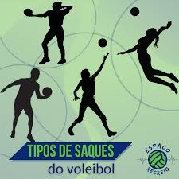
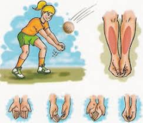
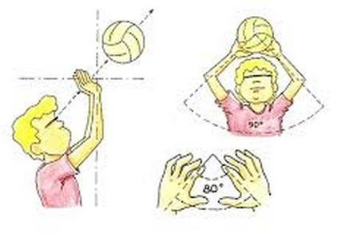

SAQUE:
O saque é o primeiro fundamento efetuado em uma partida de volei, podendo ser executado por todas as posições, exceto o líbero.
existem vários tipos de saque como:
* saque por baixo
* saque por cima
* saque flutuante
* saque viajem
* jornada nas estrelas

MANCHETE:
É dos principais fundamentos do volei, onde a bola deve bater no antebraços e as duas mãos unidas pelos polegares.Ela serve para recepcionar saques, defender ataques e não deixar a bola cair no chão, que alias é o principal objetivo do volei.

TOQUE:
Não é considerado um fundamento, mas sim um recurso. Ele é feito apenas com as mãos, utiliza dos dedos para fazer com que a bola suba em direção ao local destinado.

Confira esse canal para ter um entedimento melhor: CANAL!
OUTROS FUNDAMENTOS:
EM BREVE!!